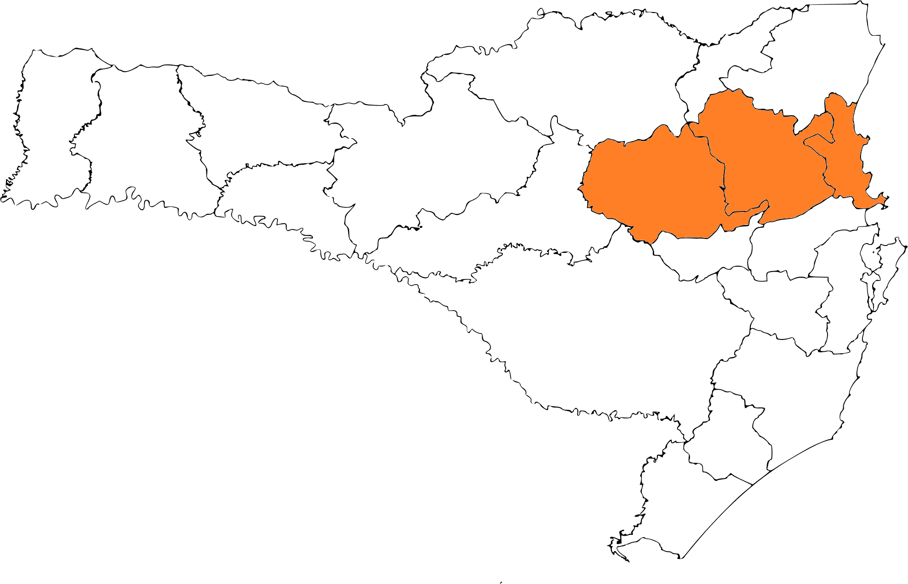

Como o site funciona
Esse site é feito para te auxiliar em diversos momentos: Perda do seu animalzinho, encontrou um animalzinho perdido, quer adotar um novo amigo ou doar um animalzinho para uma nova família. É importante lembrar que esse site é feito para todo o território do Vale do Itajaí.